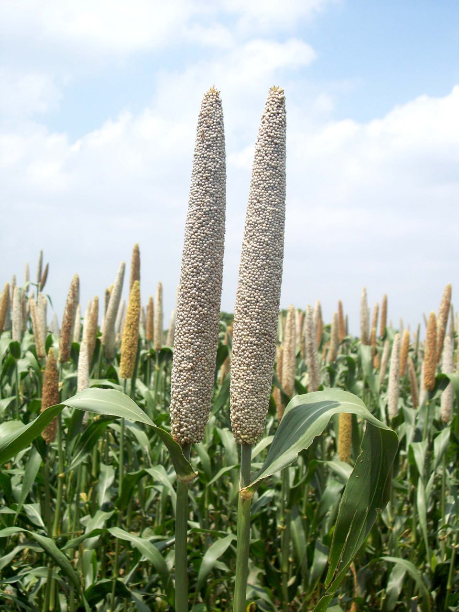

ABOUT US
-
Welcome to our agricultural products shopping website, a brainchild of Soham Karmakar and Pritikana Mondal. With a shared passion for sustainable farming and a vision to empower farmers and gardeners alike, we embarked on this journey to create a platform that revolutionizes how agricultural essentials are accessed.
-
Driven by innovation and a deep understanding of the farming community's needs, we have curated a diverse catalog of products that cater to every stage of cultivation. Our commitment to quality, eco-friendliness, and affordability sets us apart. With Soham's expertise in web design and Pritikana's insights into agricultural practices, we've harmoniously blended technology with tradition.
-
As advocates for responsible farming, we strive to provide not only top-notch tools and supplies but also valuable resources and guidance. Our partnership aims to cultivate not just crops, but a community built on knowledge sharing and sustainable practices. Join us in sowing the seeds of a greener future through our website.
-
Developer details
2023 SOHAM KARMAKAR
Linkedin: soham-karmakar-14045a228
Github: SkDevilS
Twitter: @SohamKa69681543
PRITIKANA MONDAL
Linkedin: pritikana-mondal-2a6865257
Github: priti677
Twitter:@Fire_flame_15
Featured Topic
- 
Bajra
Bajra, also known as pearl millet, is a nutritious cereal crop grown in arid and semi-arid regions. It's rich in fiber & protein.View all
-

Mushroom
Mushroom cultivation is a specialized crop production involving the controlled growth of fungi for consumption. View all
-

Wheat
Wheat is a major cereal crop cultivated globally for its edible grains, used to make various food products like bread, pasta, and cereals. View all
-

Maize
Maize, also known as corn, is a significant cereal crop cultivated for its kernels, used in diverse food and industrial products. View all